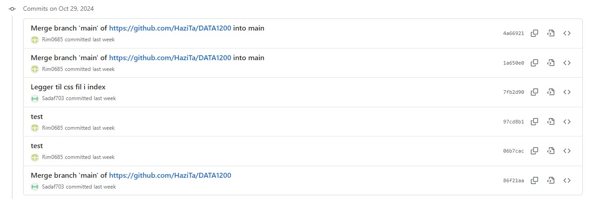
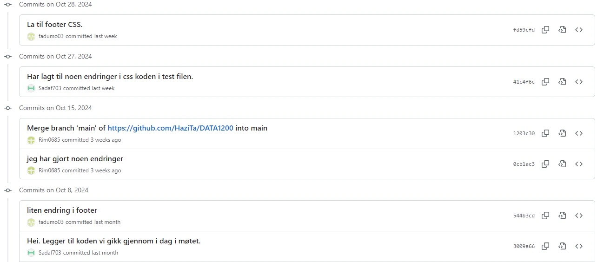
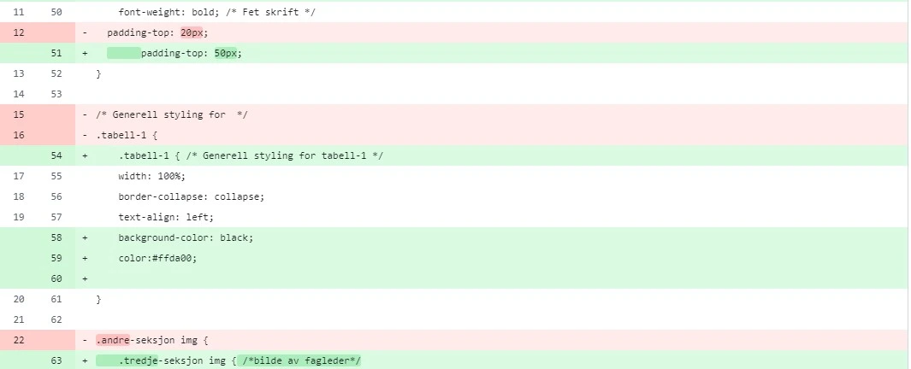
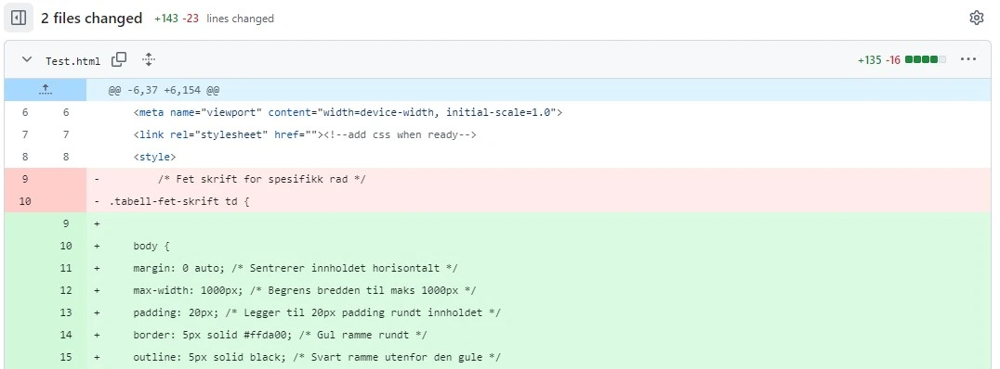

Git og GitHub er verktøy som ofte brukes for samarbeid mellom utviklere. Git lar utviklere spore endringer, arbeide parallelt på ulike deler av et prosjekt og håndtere forskjellige versjoner av koden (Chacon & Straub, 2014, s. 10–15). GitHub, en plattform som bygger på Git, lar brukere lagre og administrere prosjekter. GitHub fungerer også som et samarbeidsverktøy, der brukere kan bruke pull requests, issues og diskusjoner for å lette kommunikasjon og samarbeid (GitHub Guides, n.d.).
Gruppen vår har brukt GitHub for å samarbeide om eksamensoppgaven. Først opprettet alle gruppemedlemmene en GitHub-konto. Deretter laget vi et felles repository for å jobbe sammen med eksamensoppgaven, som vi kalte "DATA1200" etter koden til emnet. Dette repository, sammen med GitHub-brukerne til alle gruppemedlemmene, ble koblet til VS Code.
Deretter opprettet vi HTML-filer for de ulike sidene som er beskrevet i eksamensoppgaven, samt en CSS-fil. Vi startet deretter med å lage seksjoner og fordele kodedeler slik at vi kunne jobbe med ulike deler av prosjektet. I starten opplevde vi noen problemer med å gjøre commits og sende pull requests fordi vi ikke hadde lagt inn e-post og brukernavn i VS Code. Etter at vi løste dette problemet, kunne vi endelig legge til de endringene vi gjorde i de forskjellige filene.
Nedenfor er det lagt til to skjermbilder fra GitHub av commit historikk som er gjort i repositoryet av de ulike gruppemedlemmene, slik det vises på GitHub.


Her kan dere se skjermbilder fre GitHub av endringer utført i repository.


Chacon, S., & Straub, B. (2014). Pro Git. Hentent fra https://git-scm.com/book/en/v2.
GitHub Guides. (n.d.). Understanding the GitHub flow. Hentet fra https://guides.github.com/introduction/flow/.
Carlyrevier, Jehchow, Smith, P., & AbdulRehmanGHub. (2024, 1. februar). Git og GitHub essentials for Microsoft Learn-dokumentasjon. Microsoft Learn. Hentet fra https://learn.microsoft.com/nb-no/contribute/content/git-github-fundamentals.